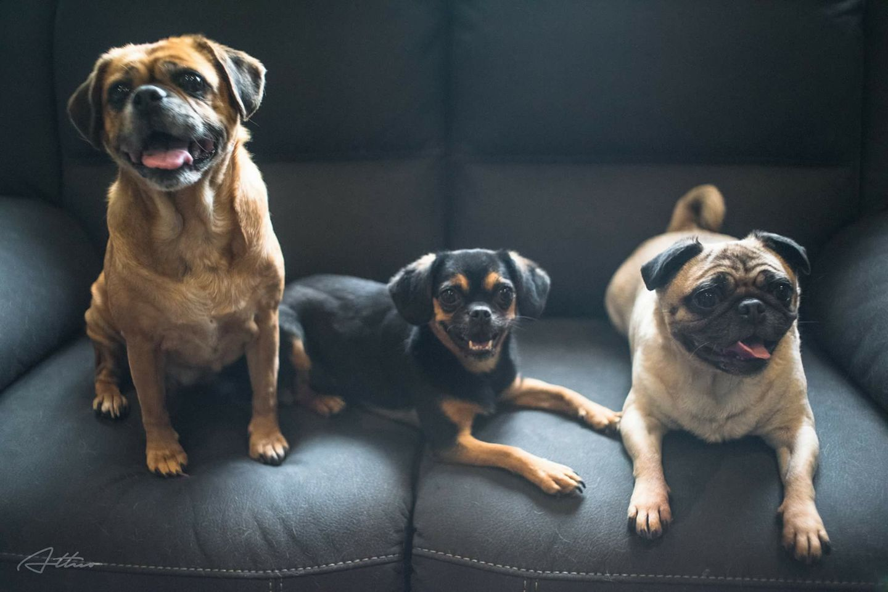
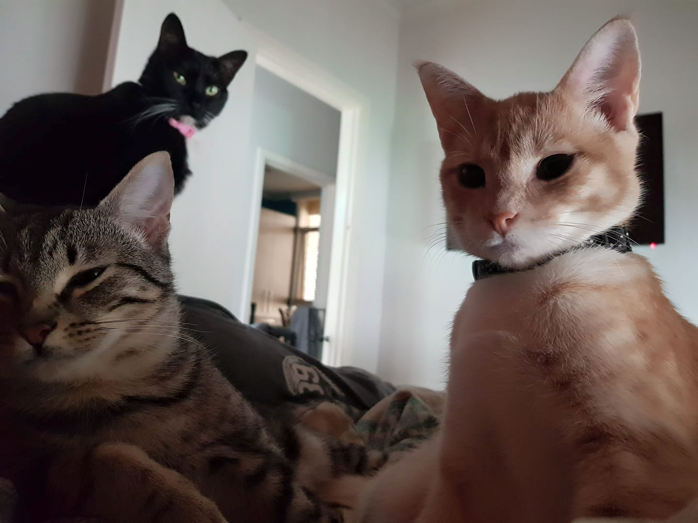
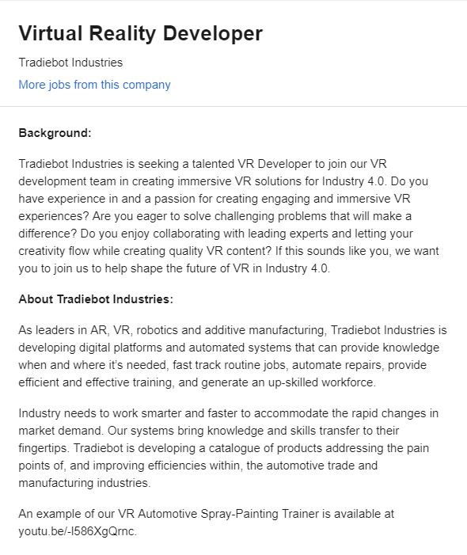
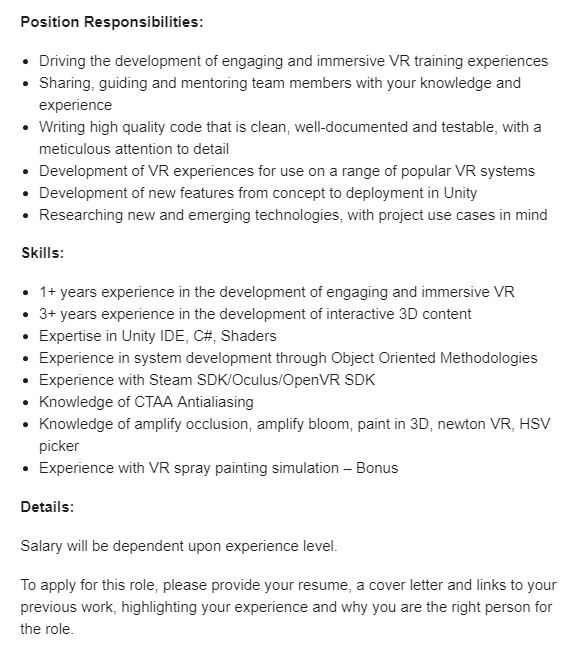

ABOUT ME
Aussie-born Chinese Viet living in Melbourne with three pugs, three cats and fish. I can speak broken Cantonese and Vietnamese but cannot write. I love games, makeup, tattoos and bubble tea but do not like sports, crowds and peak hour traffic. Currently a number cruncher during the day, pet foster at night and an aspiring member of The Avengers. I caught the travel bug and decided to explore the world after high school (to my mum’s absolute horror), and now attempting uni as a matured age student focusing on accounting and IT.
 
Interests in IT
I developed an interest in IT through my love for video games. Games was my escape from reality, which were at times boring and monotonous, and a place to connect, hang out and catch up with friends (since mum thinks we were going to die every time we step foot outside the house). Fantasy adventure games are my favourites because of the beautiful scenery, magic and engaging story lines. If I must pick an area of IT, it will be virtual and augmented reality.
My IT experience is limited to being your regular everyday user. I have zero experience when it comes to programming so I’m basically a programming newbie. My knowledge of computers is quite limited and I am still trying to wrap my head around the tech lingo. Since IT is so broad, diverse and fast paced, I’m excited and scared at the same time on my IT journey.
I want to study IT because it is one of the fastest growing industries in the world that can greatly affect or evolve other industries. The main reason why I chose to study IT with RMIT is because the course is conducted entirely online via OUA so it doesn’t interfere with current commitments. As there are four study periods in a year, I can study two units per period (which I find is a nice pace) and potentially complete the degree in three years’ time. Additionally, I read reviews from current and past students that the course is more practical with a programming focus and little fluffy subjects.
As I progress through the degree, I expect to learn a bit of everything but most importantly, master the basics and core concepts, and acquire the skills that I can apply at work. I really hope RMIT open more IT for their online students as I would like to learn and dive deeper into gaming, VR, AR, AI, forensics and programming topics.
My Ideal Job
 
The position is all about creating immersive VR solutions for Industry 4.0 and innovation. It involves being creative with ideas and figuring out how to make it happen, writing code, being involved in the development process, collaborating with others and staying on top of technology including research.
This position appeals to me because it provides a creative outlet and appears more back office so I don’t deal directly with clients. I find it interesting that I am tasked to create and find solutions to transform an industry. My experience with VR, AR and AI has been gaming related and its fascinating that this technology is impacting many different sectors.
To apply for this position, I would need to have experience in VR and interactive 3D content development plus experience with VR technologies currently on the market. Additionally, I will need to have skills and knowledge of Unity IDE, C#, Shaders, system development through object oriented methodologies, CTAA antialiasing, knowledge of amplify occlusion, amplify bloom, paint in 3D, newton VR and HSV picker.
Unfortunately, I do not currently possess the skills, qualification and experience they are looking for. However, whilst the job ad does not specify soft skills, as the role involves collaborating with others, I believe I am a great team player and have excellent communication skills. I am also adaptable and approach problem solving in a logical manner.
Fortunately, I have time to learn and obtain the necessary technical skills. My degree will cover some of the knowledge areas but I would need to seek further knowledge through MOOCS, workshops, short courses and advance bootcamp. My plan is to start learning the basics and demo every AR/VR/AI product now, and build my portfolio so I can showcase my projects and skillset. It would be awesome if I can find a job (internship or volunteering) where I am exposed to the development of VR, AR and 3D content. However, I until a graduate, I think its important that I also start networking now to connect with people in the industry by going to meetups, events and expos.
Personality Profile
Myer-Briggs

The Myers-Briggs test has identified me as a Turbulent Virtuoso type with Introverted, Observant, Thinking, Prospecting and Turbulent as my dominant traits aka ISTP-T. Apparently, ISTP’s are probably the most mechanically inclined of the 16 Myers-Briggs personality type and often excel in high pressure or emergency situations. They are practical and prioritise logic over emotions when it comes to making decisions and coping with emotions. However, they tend to struggle to connect with others and can come across as being too critical, stubborn, blunt, competitive and insensitive. This can cause conflict in group settings.
In addition to the above, I was not surprised of my results in relation to being introverted and turbulent. As a private and reserved person, I have a preference for solitary activities than being in a large social setting. At work, I prefer small teams and thrive in task oriented roles opposed to sociable roles. My top priorities are being flexible, having freedom and autonomy, and I do not perform well in situations that are overbearing, controlling or have little wiggle room. Unfortunately, I am extremely self conscious and tend to overthink things and doubt my abilities, as evidenced with a 97% Turbulent score.
Learning Style

My learning style results surprised me as assumed I would score higher for Tactile considering I learn better by doing, practice and mistakes. However, the test identified me as a visual learner where seeing is my primary learning style. This means I absorb and retain information better when it is presented in pictures, colours, diagrams, charts, handouts and written word etc. Visual learners struggle to remember verbal instructions unless noted down and performs best with overall view before proceeding. Apparently, this is the most common type of learning style.
Big Five Personality

Based on the results, my results from the Big Five Personality test is quite similar to the Myers-Briggs test. I scored extremely high for Neuroticism which refers to the tendency to experience negative feelings. This indicates that I am emotionally reactive as I tend to express these emotions openly and therefore feel extremely nervous in social situations.
Unsurprisingly, my score on Extraversion, which is marked by pronounced engagement with the external world, is low. This means I am introverted and reserved, and enjoy solo activities instead of group settings. In large groups I tend to not talk unless I have to and let others control the activities of groups.
My score for Openness to Experience is also low, indicating that I am more practical and like to think in plain and simple terms. I notice I work best in teams that have routine, guidelines and protocol.
With regard to my Agreeableness score, the low score indicates that I place self interest above getting along with others. Similar to the Myers-Briggs test, people see me as tough, critical, and uncompromising. This may cause conflicts in group situations, however, in my experience, I was great at making touch and objective decisions because I do not care about maintaining popularity.
Finally, my Conscientiousness score is low, indicating that I like to live for the moment and do what feels good now. Apparently this means my approach to work is more easy going, messy and disorganised. However, I am great at multitasking, especially when its working towards short term goals but find long term tasks onerous.
My Thoughts
Overall, I find the results for the three tests quite accurate and consistent. It has provided me with insight as to my strengths and weaknesses, identified areas I need to work on, and environments where I excel in. However, when forming a team, I think its important to have a mixture of personalities to minimise any weaknesses as each member will offer different strengths, values and opinions.Project Idea
Overview
"What's for dinner?"
Our lives have become easier from the advancement of technology. We now have the ability to access information at our fingertips, make tasks easier and complete them in a shorter timeframe. For my first IT project, I would like to design a recipe app that you can download onto any smartphone or tablet for those that are interested to cook at home. Like any recipe app out there, users will have access to thousands of recipes and have the option to narrow down their search by applying filters. But what makes my app different and special is the user can take a photo of the contents in their fridge, freezer and pantry, then select their preferences, and the app will identify what ingredients they have on hand and match the user with recipes available, thus creating value.Motivation
For those interested in cooking at home, how many of us go do our weekly groceries but end up wasting the ingredients and have to throw them out? We have the best intentions but life gets in the way and we end up eating out, getting takeaway, grabbing fast food or ordering Uber Eats. In addition, all the other recipe apps do not take into account what ingredients you do or don’t have at home. I believe this app and the enhanced features will provide a solution for those who are hobbyist or those who are conscious of their finances, environment and health by making cooking simpler which also helps them save money and decrease food wastage.Description
My app will be visually stunning, elegant and extremely user friendly. My colour scheme will be bold and bright as I personally associate bright colours with appetite and it triggers a happy emotion. It will contain thousands of photos of mouth watering pictures of food and short video guides rather than lengthy text descriptions.
The feature that will make my app stand out from the rest will be the feature that allows users to take a photo of the contents in their fridge, freezer and pantry and the app will then identify what ingredients the user has on hand based on the pictures. The user will then be prompted to apply filters such as meal type, for example, meat type, vegetarian, vegan, gluten free, keto, dairy free, egg free etc. The user will then be required to select a time frame, for example under 30 minutes, and portion size. Based on the users preferences and ingredients available, the app will then list recipes available.
In built kitchen tools to assist with meal preparation will be included. Such tools include measurements, weight, unit conversions and timer. While cooking, you will be able to cross of ingredients and steps as you go.
As expected, users will also have access to a database containing recipes created by nutritionists, professional chefs and other users. Users can search recipes they like and view other recipes that share the same or similar ingredients. Alternatively, users can search via ingredients to view recipes available. There will be a personal cookbook feature where users can bookmark and favourite the recipes they like and further customise the recipes by adding or removing ingredients and steps. All recipes will include nutritional information.
There will also be a meal planning feature where users can look up recipes or ingredients, select the desired portions and the app will create a shopping list on their behalf. This has the potential to significantly reduce costs and food wastage as users will be buying ingredients in bulk.
I have decided the app will be subscription based offering two subscription tiers. Subscribers will have access to discounts as the app will be partnered with the big supermarkets. All subscribers will have access to discounts but those on the higher tier will have access to further special discounts and free once per week home delivery.
Finally, there will be a social aspect where you can share your cooking experience with other users. You can share your own recipes, share existing recipes, your photos, your shopping lists and see what your friends are making. Sharing your shopping lists can help other families of the same size regarding their budget. Users can comment, rate and vote on recipes or meal photos. Once a month, user with the highest vote for recipe or picture will receive credit towards their shopping list.
As you can see, my app will incorporate all the necessary features currently on the market but has gone through innovation to include additional features to make it unique and exceed expectations. I want this app to be the go to recipe app for every cook, no matter what your skill level is.